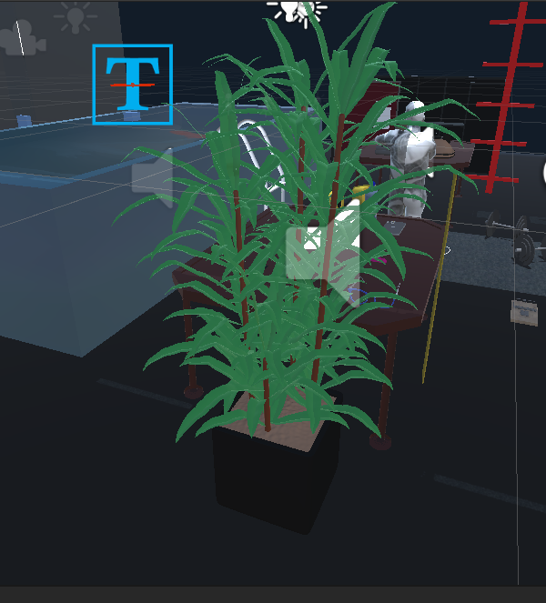

Introduction
The foucs of this project was to presenet an extension to what project 2 consisted of. That extension focuses on perspective and how different ways of seeing something is beneficial to us as developes. There are 3 different versions that will be presented in this project: Mego Playset, Land of the Giants, and Dancing on the Ceiling. Each of these scenes will have different implementations that will serve in their owns ways. The Mego Playset will focus on creating a miniture version of the original building from project 2, and have it to where the user can place dolls inside of them and interact with it. The Land of the Giants scene will focus on scaling the user down to 1ft. in height, viewing the room in a much different scale. The user will be able to interact with items that match the user's realistic ability to grab something of its size. The ability to climb up tables is also achievable. The last scene being Dacing on the Ceiling focuses on being able to rotate the building to be turned a certain way and allowing the user to walk on all sides of the building. The concept of gravity will also be taken into consideration and will affect how the models are placed within the perimeter of the structure.
Dancing on the Ceiling
This scene allows for the user to be able to rotate themselves into whichever direction they choose. For example, by clicking on one of the buttons that is displayed within the scene, the user will be able to 'walk' on the wall or ceiling depending on which way they choose. All models that are in the scene will be affected by gravity, meaning if you place yourself upside down, all models will fall to the ground.Land of the Giants
The main focus of this scene was to incorporate 20 new models and have half of them be interactable to the user, which in this scene is 1 foot tall in height. Everything appears to be very large in the user's eyes. With this, there are small things respective to the user's height that allows certain things to be interactable. They are able to walk up and down the tables that have these objects, and are able to do everything else normally in this scene.Mego Playset
Starting off outside the building, the user will take the original building with all the models in it from project 2 and minimize it to a doll house size. All the models within the building are also shruken. There are 4 dolls with animations next to the playhouse which allows the user to be able to pick them up and place them within the building. The user can take off the roof of the playhouse and place them inside. Moreover, there is a flashlight that will allow a user to turn it on and off and point it within the playhouse for better examination.How to Use
After installing Unity, it is a simple to run the game with the play button. One will originally be spawned within the Mego Playset area, where a menu will be displayed with various buttons determining the different scenes. The first step is to go to the Github page and follow the direction listed on there. What it says is this: Be sure to run 'git clone' and paste in the link from Github. (Example: git clone https://github.com/jacjanowski/Perspective.git) Be sure to use this command in an empty directory. Once the project has finished uploading in your directory, you may open up Unity Hub and select this directory location in order to open up the project within Unity. Users will be able to point their controller at one of the buttons and select which scene they would like to enter. The menu will be provided on every scene. When working inside of the Dancing on the Ceiling scene, there will be an additional set of buttons which act as a controller. 4 buttons (up, left, down, right) will allow the user to be able to change their orientation of how they perceive the world they are within. Being inside the Land of the Giants scene will be normal as usual.
Video of the Project
16 Models imported from the internet
- Eraser
- Meter Stick
- Paper Clip
- Barbells

- Shoes
- Plant 
- Glasses Eyewear

- Wallet

- Beanie Cap

- Stapler
- Skateboard

- Mouse Trap

- iPhone

- Headphones
- Water Bottle
- Ladder
- Round Coffee Table

5 Models created using Blender
- Pokemon Ball
- Donut

- Coffee

- Speakers
- Gameboy
10 Models that are grabable
- Pokemon Ball
- Gameboy
- Wallet
- Water Bottle
- Paper Clip
- iPhone
- Glasses
- Eraser
- Headphones
- Shoe
5 Dolls with animations
- Pikachu - Idle animation

- Figurine - Flossing animation

- Halo action figure - various animations

- Spiderman - jump animation

Dancing on the Ceiling

The controller system allows users to be able to switch the orientation and adjust the rotation depending on which way the user would like to be positioned. If the user were to change themselve to be upside down, gravity will be in affect and various items will be caused to fall to the ground. All items remain interactable as the original project 2 had it originally as well as the functionality for the rest of the models.
Example of menu with controller that's used for rotation.
Example of the user positioned 90 degress to the right. Shows how the different models were affected.
Another angle being applied to the scene with the changes of gravity taken into consideration.
Land of the Giants

Land of the Giants focuses on yourself being shrunken down to a 1 foot height size. With the 20 additional models implemented to match the size of the user, half of these items will be interactable. The user has several ways to get up on top of the tables with the items. Shown here is a visualization to show which items are grabable as well as the scale of the person being taken into affect. Other items from project 2 remain implemented and functionality remains constant.
Example of ways to get up on top of a table in order to be able to interact with certain models that are scaled to your size.
Overall view of the original scene but now you are down to 1 foot in height. Notice the look of how big these models appear.
Outlook from on top of one of the tables with the interactable objects.Helps to depict the size of yourself with respect to the items next to you. Notice not all objects are interactable, only those that fit your size.
Mego Playset

Mego Playset takes the 4 dolls that were imported and has their respective animations in a loop, allowing the user to be able to play with these figures and put them into the orignial building. The building and all the models within it were shrunken down to a miniture size, allowing the user to shine a light within the building to see where they wish you place their action figures. Animations remain in a loop with constant movement being applied. All items within the building remain interactable as it was in project 2.

Overall view of how the menu system looks as well as the display of the playhouse. Notice the size of the building and the animated dolls next to them.
4 animated dolls are placed next to the playhouse and are able to be grabbed and placed within the playhouse while still moving with their specific animation.